R&D Projects › Button Extender v2
Button Extender v2 — Engineered & SLA-Printed
A four-part, spring-loaded button extender for a Zojirushi water boiler, designed for my roommates with hypermobility spectrum disorder. It turns a small, stiff fingertip button into a wide dome pressed with the palm. From three pencil sketches to dimensioned parametric drawings, STEP models and a motion study in about a week, then a small series printed in Formlabs resin.
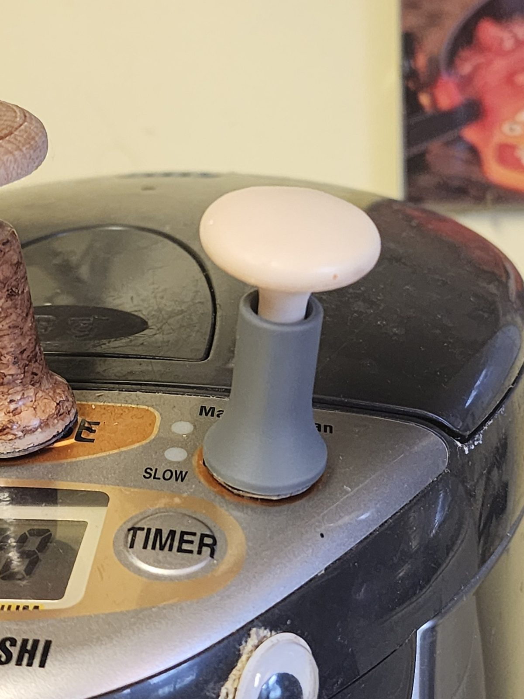
Motivation
The dispense button on our Zojirushi boiler is small, nearly flush with the lid, and meant for a fingertip. My roommates have hypermobility spectrum disorder (HSD). For them, pushing hard through the end of a finger puts the whole load on small, overly flexible joints: it hurts, and it risks inflaming those joints.
The first actuator I made for this boiler was turned by hand from wood and cork and fitted to the appliance on the spot. It solved the problem, but it is a one-off. Nothing about it could be reproduced, and every size in it lived in my head. This version keeps the same idea and turns it into a documented mechanical design: parts with drawings and tolerances, an assembly that was checked before anything was made, and a print order that anyone could repeat.
The extender sits over the original button. Instead of a fingertip, you press a wide domed cap with your palm, so the force is spread over a large area and carried by the hand and wrist. A rounded plunger at the bottom pushes the real button, and a spring returns everything when you let go.
Design intent
- Press with the palm, not the fingertip. The cap is Ø27 mm, several times wider than the original button, so it fits under the palm and spreads the pressure instead of concentrating it at one point.
- Nothing sharp under the hand. The top is a shallow R50 dome that rolls into an R3 edge and an R9 flare: one tangent surface with no corner pressing into the skin.
- A clear, solid end of travel. The press ends on two hard stops that meet at the same moment, so the user feels exactly when the button is pressed and never pushes harder "to be sure".
- Automatic return. A spring lifts the cap back up, so it never has to be pulled or reset.
The parts
| # | Part | What it does | Key sizes (mm) |
|---|---|---|---|
| 1 | Button cap | The surface you press. A wide domed top blends into a stem through one smooth curve and ends in a pin that guides the spring. | Ø27 cap, 34.59 tall, R50 / R3 / R9 profile, Ø7.3 stem, Ø5.5 × 11.5 pin |
| 2 | Spring | Returns the cap after each press. Stock compression spring. | OD 7.4, 0.9 wire, 7 coils closed and ground, 21 free, ~4.7 N/mm |
| 3 | Shaft | The body. A flared base sits on the appliance; a through bore guides the cap and holds the spring. | 28.84 tall, Ø20.5 base, Ø13 stem, Ø7.4 bore, R9 entry flare |
| 4 | Plunger | Its spherical dome is the only thing that touches the appliance's own button. | 7.5 tall, Ø7.3 head, Ø5.5 × 3.5 pin |
All four parts are coaxial. Top to bottom: cap, spring, shaft, plunger. The spring sits inside the shaft bore between the cap's pin shoulder and the plunger's shoulder.
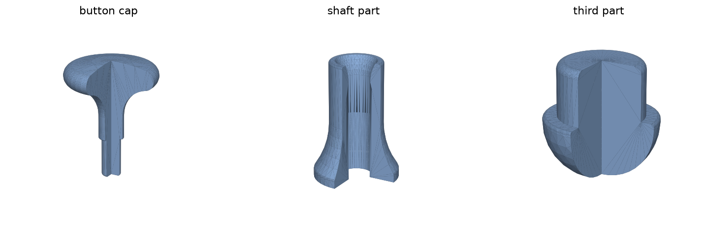
How it works
At rest the spring is relaxed at 21 mm and the plunger dome sits flush with the bottom of the shaft. Pressing the cap compresses the spring by 6 mm, to 15 mm and about 28 N, and pushes the plunger dome 2 mm below the shaft base. That 2 mm is what presses the appliance button. Releasing the cap lets the spring push everything back.
The stroke ends at two hard stops that are designed to touch at the same instant:
- the cap's pin meets the plunger's pin inside the bore, and
- the R9 curve under the cap lands on the R9 flared opening at the top of the shaft.
Both gaps reach 0.00 mm together, so the press feels solid and the load is shared across the wide flare rather than stopping on a Ø5.5 pin.
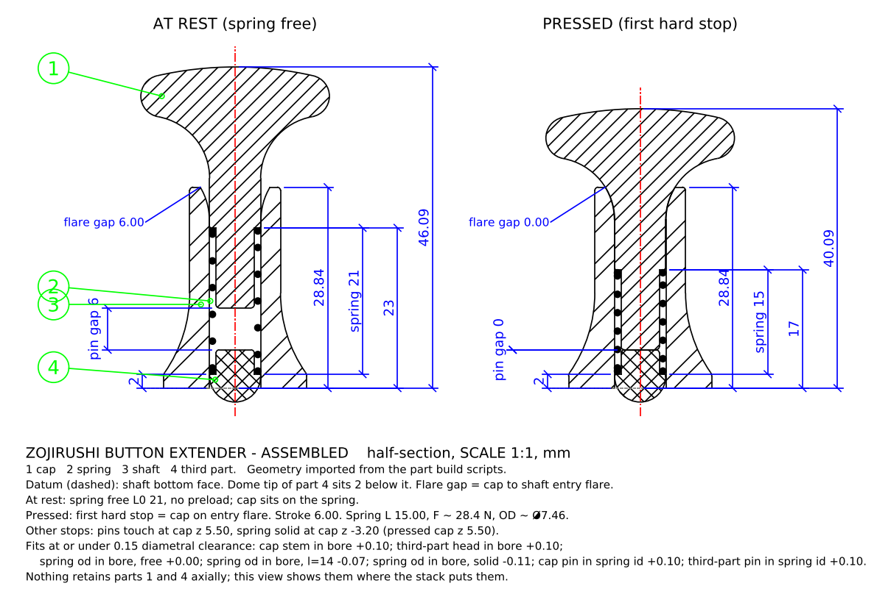
From sketch to drawing
Each part started as a pencil sketch with its main dimensions, plus a written spec for the spring. Each sketch then became a small Python script whose dimensions sit at the top of the file. Running the script regenerates the DXF drawing and a PNG preview, so changing a size is a one-line edit and the drawing is never out of date.
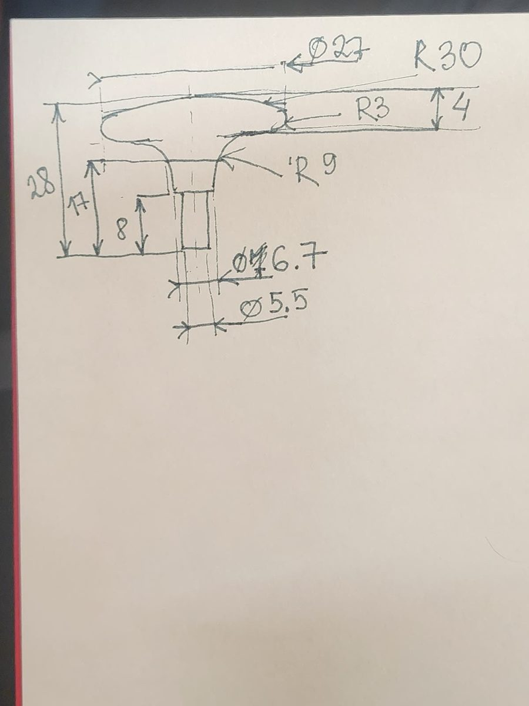
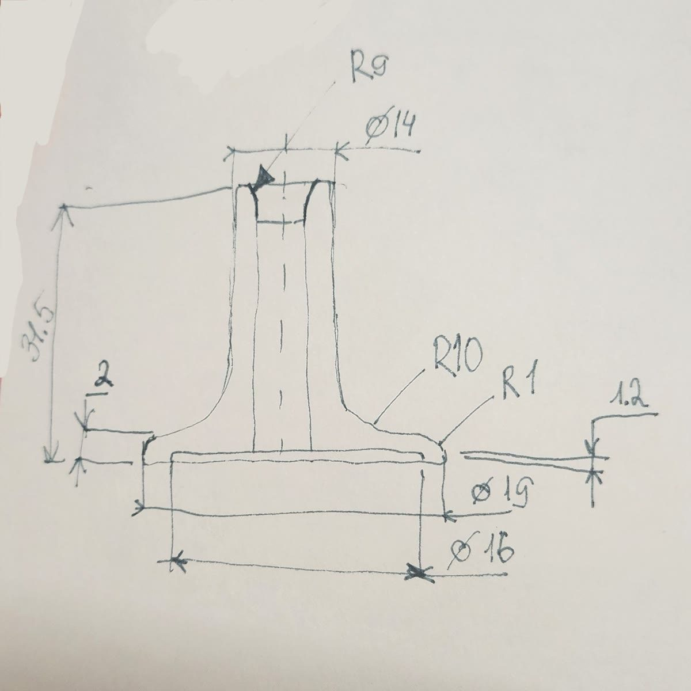
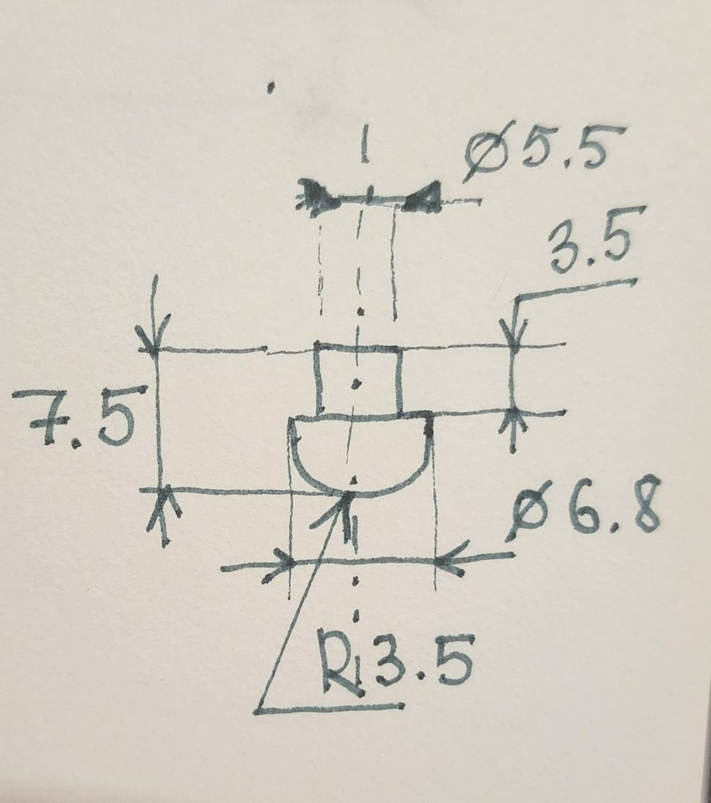
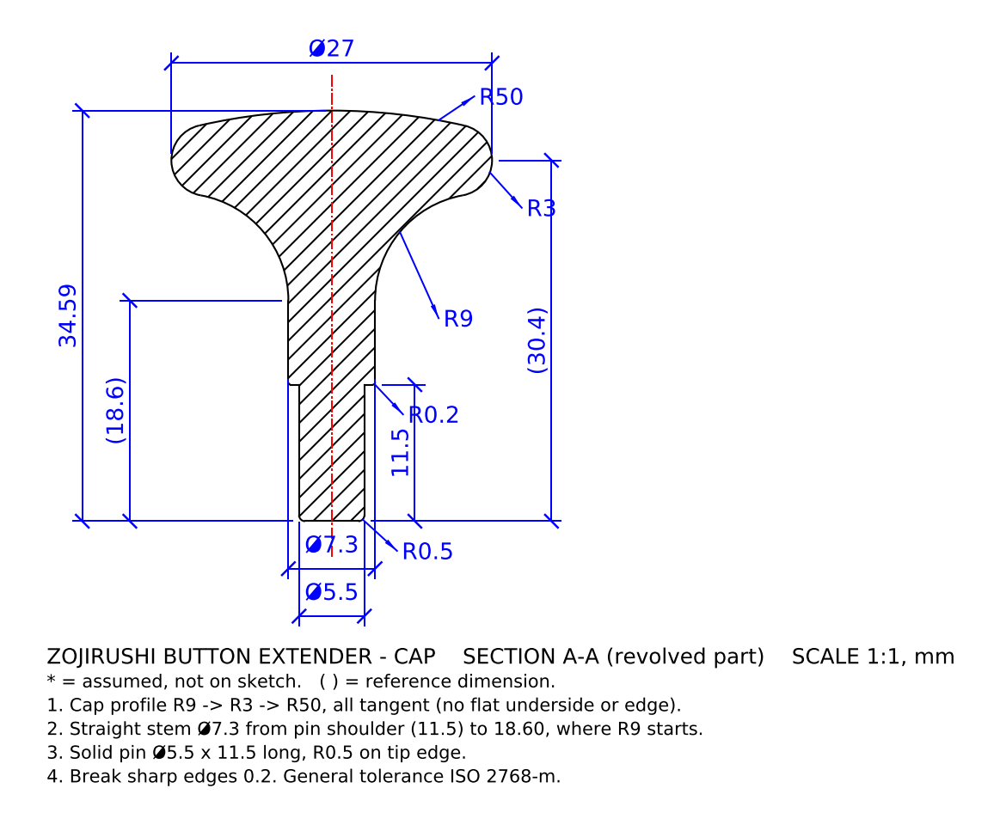
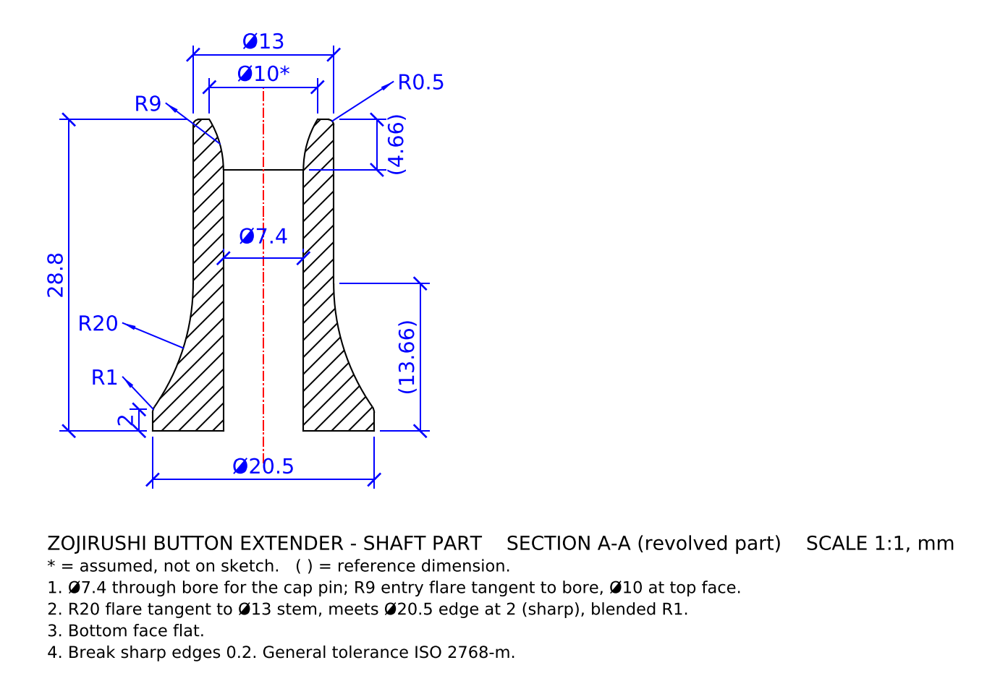
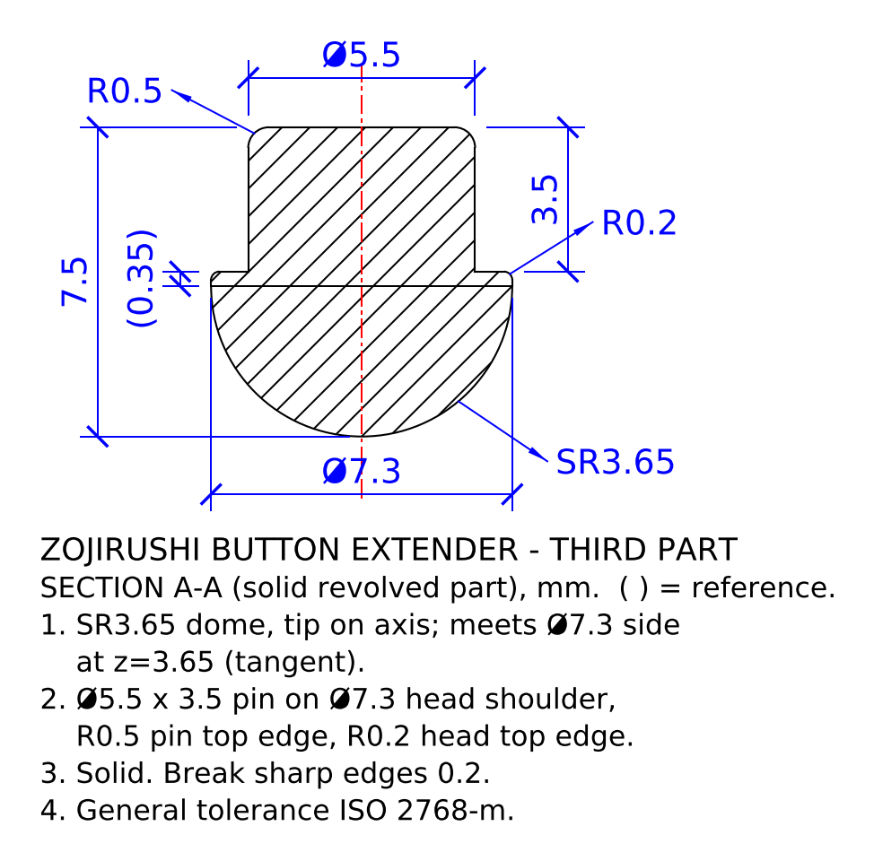
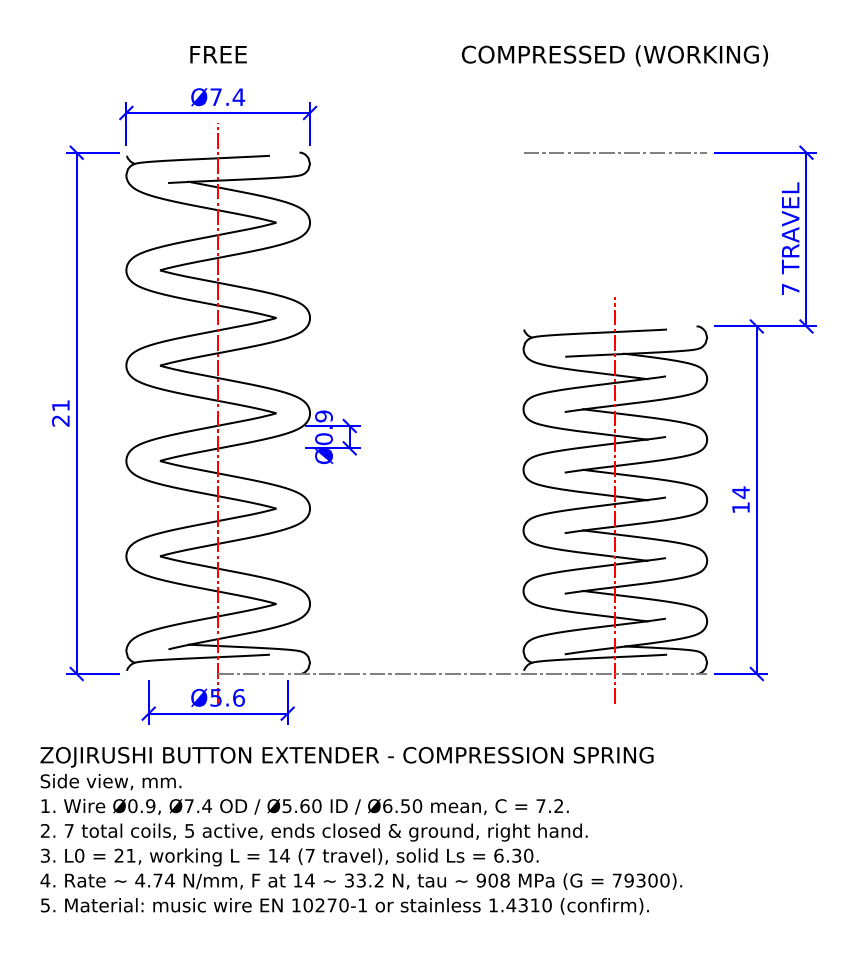
Checking the fit before making anything
An exploded assembly and an assembled half-section are built directly from the part scripts. I used them only to check sizes, never to edit parts, so the parts stay the single source of truth. The exploded drawing carries a parts list, a mating-diameter table with every clearance written out, and an axial stack check. That is where the parts that did not work together showed up, and the sizes were then tuned one at a time.
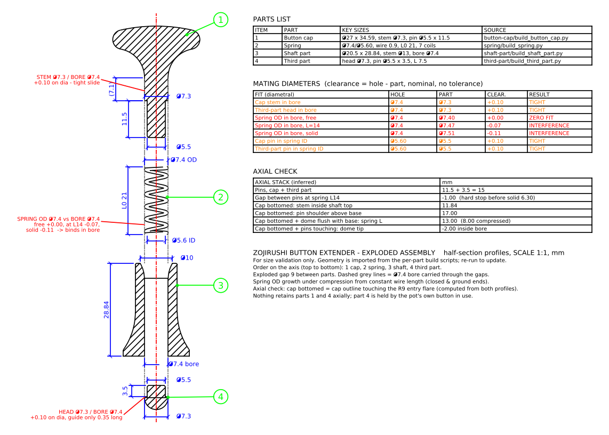
Key decisions
- Pins as the stroke limit. The cap pin went from 8 mm on the sketch to 11.5 mm so the two pins meet 1 mm before the spring goes solid. The spring never bottoms out.
- Two stops, one moment. The cap stem was tuned, and shortened by 2.91 mm in the last step, so the cap's R9 curve lands on the shaft's flared opening exactly when the pins touch.
- Stack height. The shaft went from 31.5 mm in the first sketch to 28.84 mm after a few rounds of checking the stack in the assembly.
- Plunger travel. The plunger dome starts flush with the shaft base and ends 2 mm below it, which sets how far the appliance button is pressed.
- Clearances written down, not guessed. The cap stem and plunger head, both Ø7.3, slide in a Ø7.4 bore: 0.10 mm diametral. Pins are Ø5.5 in the Ø5.6 spring ID.
- Printable shapes. The recess under the shaft base was removed, the base and stem were resized, and R0.2 and R0.5 edge rounds were added to the pins and heads so parts slide together and come off supports cleanly.
- Every size checked against the user. A wide cap, a smooth top and a defined stop were the criteria for each decision, not what was easiest to model.
Printing
The finished profiles were revolved into solid models and exported as STEP and STL. A small series of four sets was ordered through Formlabs' on-demand service, FormNow, and printed on 7 October 2026. The cap, the surface the hand touches, is in Precision Model Resin; the shaft and plunger are in Grey Resin V5. All parts shipped with supports attached and were cleaned up by hand.
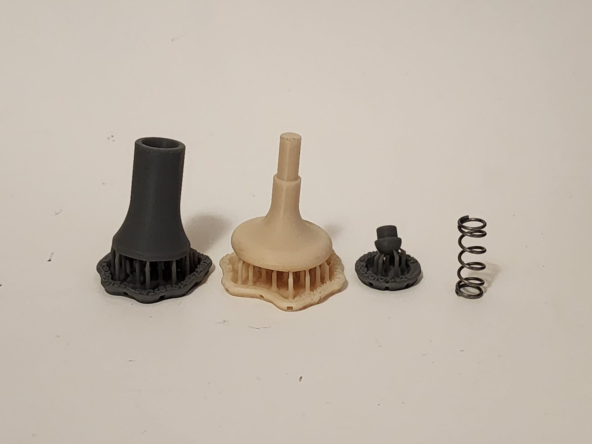
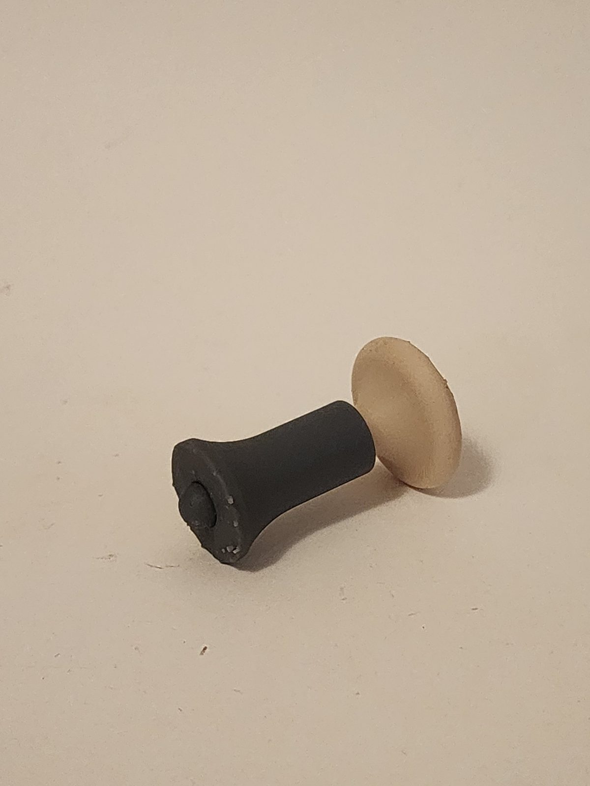
Next version
- Spring fit. The spring's outside diameter, 7.4 mm, equals the bore, and a compressed spring grows about 0.1 mm wider, so it can rub or bind near full press. A Ø7.8 bore or a spring with about 7.0 mm OD fixes it.
- Retention. Nothing holds the cap and plunger in axially yet; they stay in place because of how the stack sits on the appliance. A snap ring or small lip would make it one piece you can pick up.
Tools
- Hand sketching for the initial concept, based on my roommates' needs
- Python with ezdxf for the parametric 2D drawings (AutoCAD-compatible DXF)
- CadQuery for the 3D solids (STEP and STL)
- matplotlib and ffmpeg for the 2D motion study; three.js for the 3D cut-away animation
- Claude as an AI assistant to draft the drawing, modelling and animation scripts from my sketches and instructions
- Formlabs SLA via FormNow: Precision Model Resin and Grey Resin V5
Files
Final drawings as DXF (AutoCAD R2010) and the three printed parts as STEP, in millimetres.